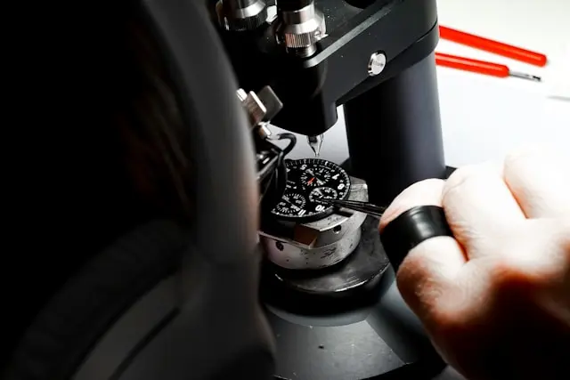
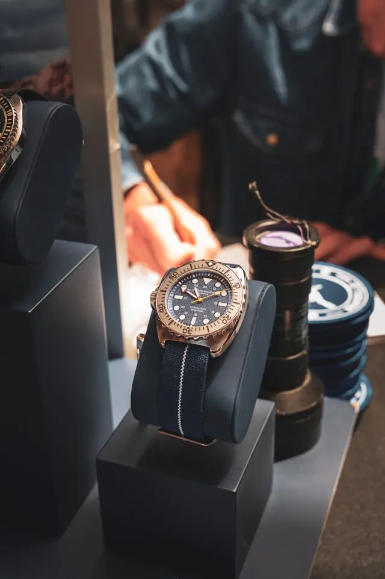
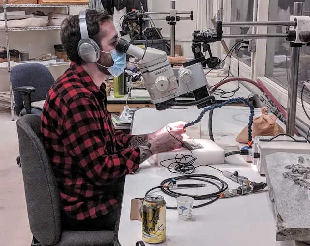
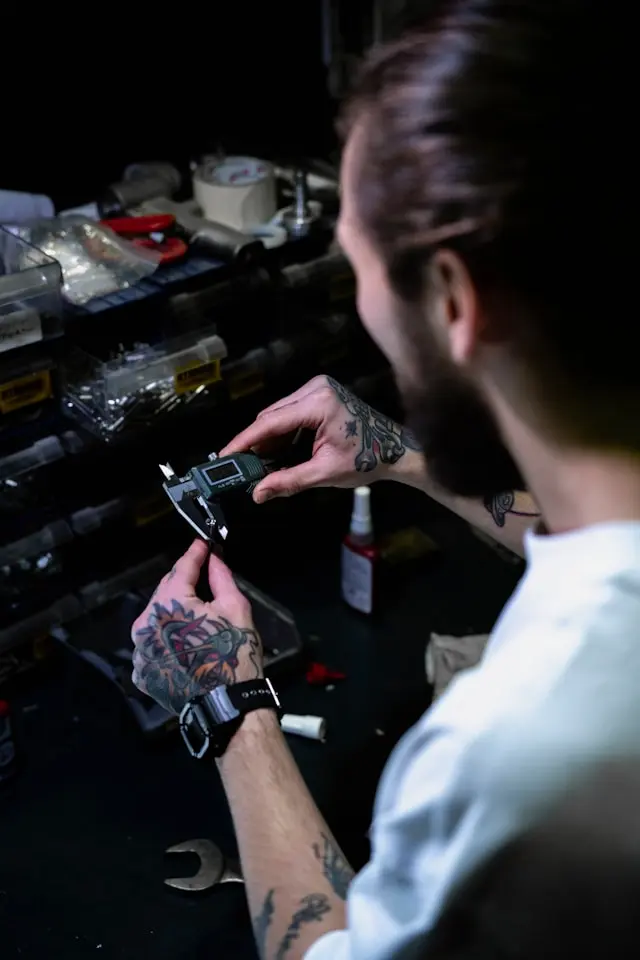

Eleven pairs of hands touch every Stackly watch before it reaches a wrist — regulated, oiled, and cased in our Columbus workshop, the same way it was done in 1998.
No shortcuts, even when a release is popular before it's finished.
Sketches become a working prototype our team wears for 60 days before anything is finalized.
The first cases are milled, polished, and pressure-tested individually before wider production begins.
Every movement is timed across five positions with a loupe and tweezer, not a machine.
Dial, hands, and crystal are set by hand in a dust-controlled room, one watch at a time.

A final inspection against a 40-point checklist, then it's cased in oak and shipped with a 5-year warranty.

A look at where every Stackly watch is actually made.


Four of the hands your watch passes through before it ships.
18 years regulating movements, trained in Glashütte before joining Stackly in 2011.
Hand-polishes every Heritage and Atelier case before it's cased and sealed.
Runs the 40-point checklist every watch clears before it's allowed to ship.
Keeps the bench running and trains every new watchmaker who joins the team.
We source components the same way regardless of collection — no cutting corners on the parts you can't see.
Every Stackly watch ships with a 5-year warranty and a service program built to keep it running for decades, not years.
Every case is pressure-tested to its rated depth before casing.
Regulated across five positions to within two seconds a day.
Every case and crystal is inspected under raking light for defects.
A 40-point pass/fail review before anything is packaged to ship.
"Three years in, the Oakhurst still keeps time better than my phone. You can feel the weight of it being made properly."
"Sent mine in for a service after four years and it came back looking brand new. That's rare these days."
"Toured the workshop on a visit to Columbus. Watching them regulate a movement by hand changed how I see the price tag."